Voxel-Lattice Gaussians
Cutting, collision and material from one representation
Preprint
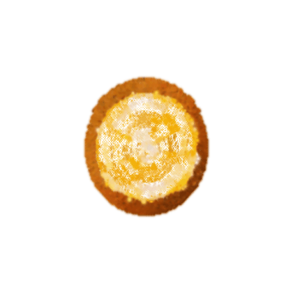

Abstract
Generating an object's interior so that cutting it open reveals something plausible has been posed as a texture problem, and solved as one: the interior becomes a cloud of free-floating primitives, each carrying a colour and nothing else. We keep that supervision and change the representation, putting the whole object — interior and skin alike — on a two-level voxel lattice with one Gaussian per occupied cell and every cell's attributes decoded from an eight-dimensional feature. Quantising is what turns a set of points into a graph, and three properties follow from the same eight numbers per cell. A cut is answered by exact, threshold-free connected-component labelling, so the pieces are enumerated and each becomes its own simulated body. Material becomes decodable: the object separates into peel, flesh and pith without supervision, and a probe on the frozen appearance feature recovers that decomposition at R² 0.934 against a shuffled control's −0.009. And the appearance stops depending on the resolution it is rendered at, because a cell is sized to its own spacing rather than to a screen-space footprint. The representation costs four to ten times fewer primitives and eight to seventeen times fewer parameters than the released models, places its detail where the object's structure is rather than finer than the reference, and keeps it at resolutions where those models come apart.
Introduction
Cutting open a reconstructed object exposes nothing, whether the reconstruction is a radiance field[2] or a 3D Gaussian Splatting model[1] is a shell and nothing inside it was ever reconstructed. FruitNinja[3] closes that gap: it fills the interior with opaque atomic Gaussians, defines a small set of cross-sectional planes, and optimises the interior against references generated by a latent diffusion model[9] through score distillation[10], optionally fine-tuned on a handful of photographs[11], for those planes, so that a cut at an unseen angle still exposes something plausible.
The filled interior is a point cloud, inherited from the ray-cast filling of PhysGaussian[4]. That is sufficient for the question the paper asks — does the exposed face look right — and insufficient for the question immediately after it. An interactive system that cuts an object needs to know what it now holds: how many pieces exist, which primitive belongs to which, what may collide with what, what each region is made of. A point cloud answers none of these without first inventing an adjacency it does not have, and the answer then depends on the distance threshold used to invent it. Two neighbouring particles in a k-nearest-neighbour graph are connected because a number said so, not because the object is.
So we change the representation and keep the supervision. The whole object — interior and skin alike — becomes a regular lattice: one Gaussian per occupied cell, positioned at the cell centre, with the skin refined to half the interior spacing. This is the same object the fill was approximating, quantised onto a grid, and quantising is exactly what turns a set of points into a graph.
A primitive at \(x\) is assigned the cell index \(k(x)\) at a spacing that depends on where it is: the interior is quantised at \(h\), the shell at \(h/2\), with \(\rho R\) the radius that separates them and \(o\) the grid origin.
The occupied cells, each an index together with its level \(\lambda\), are the primitive set; the source primitives play no part after this.
Quantising is what turns a set of points into a graph, because a grid comes with its own adjacency — two cells are neighbours when their boxes share a face:
Within one level this is the six-neighbour test \(\|k_a-k_b\|_1=1\); the general form is needed only along the shell, where one coarse box meets four fine ones. Cell \(i\)'s Gaussian sits at \(y_i=o+\delta_i k_i\) before the decoded offset moves it, and every geometric quantity below is a function of the index rather than a free parameter.
One shared MLP decodes every cell's appearance, opacity and offset from its eight-dimensional feature \(f_i\), so position is implicit in the grid index:
Related Work
Interior generation
PhysGaussian[4] fills an object for simulation, identifying interior cells by ray casting along the six axis directions with an intersection-parity check, and gives each filled particle the opacity and colour of its nearest surface Gaussian; the interior is uniform and reads as smeared skin when exposed. FruitNinja[3] supervises the interior with a diffusion prior on user-defined cross-sections and is the work we build on; its voxel grid is a smoothing device applied over free-floating Gaussians rather than the representation itself. GaussianFluent[5] is concurrent and closest in aim: it uses a density voxel grid to find the enclosed volume and initialise interior Gaussians, generates interior texture by inpainting axis-aligned slice renders, and simulates brittle fracture with CD-MPM — but its grid is a scaffold for sampling, the primitives are neither one per cell nor lattice-indexed afterwards, and its fracture is damage-driven within a single solver rather than a decomposition into enumerated bodies. Per-view 2D inpainting of the exposed face[6] produces a plausible image and no 3D state, so successive views disagree and each frame costs a full sampling pass. InnerGS[7] reconstructs interiors from real slice data rather than generating them.
The oldest and closest statement of the problem is not in this literature at all. Kopf et al.[8] synthesise a solid texture from 2D exemplars — a volume whose arbitrary slices resemble a photograph of a different instance of the same material, with no pixel correspondence available — which is, structurally, the supervision problem here posed nineteen years earlier and solved without learning. Its modern counterparts paint a boundary surface rather than a volume[13,12], and distribution losses[39] are what let either be supervised by an exemplar with no pixel correspondence, as do global constraints on region size[38].
Structured Gaussians
Scaffold-GS[14] attaches Gaussians to anchor points and decodes their attributes with a small MLP; we adopt the device so that parameter count is decoupled from primitive count. Putting Gaussians on a regular grid is itself established: GaussianCube[15] rearranges a fixed set into a voxel grid by optimal transport so a 3D U-Net can consume it, and VolSplat[16] predicts one Gaussian per occupied voxel from a sparse feature grid. Octree-GS[17] imposes a hierarchy for level of detail. In none of these is the grid used as an adjacency structure — GaussianCube's optimal-transport assignment does not even preserve geometric neighbourhood — and none addresses interiors or physics. We therefore claim not the lattice but what having it as occupancy with adjacency makes possible.
Topology and simulation on Gaussians
PhysGaussian drives Gaussians with the material point method[18,19], treating each primitive as a material point; fracture is supported in the sense that large deformation lets particles separate into groups, but those groups are never labelled and remain one particle set in one solver. GaussianFluent and Fracture-GS[20] likewise drive all particles through a single background grid, so separation is emergent. VR-GS[21] is the strongest alternative answer to how one obtains topology on Gaussians: it voxelises the centres into a VDB, extracts a watertight surface by marching cubes, tetrahedralises it, and embeds every kernel in the resulting cage. That does supply connectivity — at the cost of three hand-set parameters, a level set that must be watertight and well behaved, which is where thin and high-genus geometry fails, and a cage fixed at build time, so a cut requires re-meshing and re-embedding. Its per-kernel local tetrahedra are by construction connectivity-free, and its multi-object interactions are authored by semantic segmentation rather than derived from geometry. GaussianCut[22] builds a k-nearest-neighbour affinity graph over Gaussians and partitions it by graph cut, which is a user-driven semantic partition rather than a geometric decomposition; the threshold-dependence we avoid is exactly the property of such a graph. Systems that simulate several 3DGS assets together[24,23] collide bodies that were separated offline. A regular lattice instead admits the grid-structured smoothing priors that predate all of this[40,41].
Segmentation from planar observations
Segmenting a 3D volume from a handful of 2D planes is the 2.5D problem of medical imaging, where the established fusion rules[25,27,28] run from majority voting through softmax averaging to per-view-per-class learned weights, and where Multi-Planar U-Net[26] is the precedent for planes that are not axis-aligned, and orthogonal-annotation co-training[29] operates at two labelled planes per volume. For Gaussians specifically, FlashSplat[30] shows that assigning labels so that rendered masks match given 2D masks has a closed-form optimum — a vote weighted by each primitive's own alpha-transmittance contribution. The lifting family[31,32,33,34,35,36,37] segments only what is visible from outside; we are not aware of prior work that decomposes a reconstructed interior into material regions supervised by cross-sections of a different specimen.
Positioning
What we claim is narrow and, we believe, unoccupied: a cut is answered by exact, parameter-free connected-component labelling on lattice adjacency, so the pieces are enumerated, each becomes a separate simulated body with its own state and material, and they collide as such. Emergent separation within one solver, offline decomposition by segmentation, and threshold-dependent graph partitions are different answers to a different question.
Method
Pipeline
The released models are already filled, so there is no scan to start from and no density step to
separate interior from exterior: the surface is recovered by binning primitives by direction from the
centroid and keeping those within one fill layer of the furthest in their bin, and the paper's own
internal_filling is re-run on it before quantising.
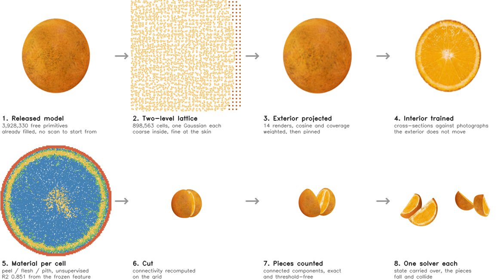
The two-level lattice
The filled interior is quantised onto a grid: one Gaussian per occupied cell, positioned at the cell centre, with the skin refined to half the interior spacing so that the surface keeps its detail without paying for a fine grid throughout. Each cell stores an eight-dimensional feature, and a single shared MLP decodes every cell's appearance and opacity from it — position is implicit in the grid index. This is the same object the fill was approximating, quantised onto a grid, and quantising is what turns a set of points into a graph.
Supervision
Only the interior trains, against diffusion-generated references for a small set of cross-sectional planes, as in the published method. The exterior is not trained at all: fourteen renders of the recovered surface are projected onto the skin cells, each cell reading the pixel it projects to weighted by cosine over a 60° cone and by the rasteriser's own coverage, and then pinned. Every training schedule we tried degraded that projected exterior, because the exterior branch averages over views and averaging removes whatever only one view sees.
A skin cell reads the pixel it projects to in every view that can see it, weighted by the cosine between the cell normal \(n_i\) and the view direction \(v_j\) and by the rasteriser's own coverage \(a_j\):
The interior is supervised through the same rasteriser, on the cells within half a plane spacing \(\Delta_\pi\) of the plane, with everything in front of it discarded — which is what makes the image a cut rather than a view:
The reference is re-mapped onto the rendered component by \(\Phi\) before the loss sees it: the photograph is of a different specimen, so a per-pixel loss against it would ask the model to move segments that are correct.
Quantisation details that are not cosmetic
The grid origin must be snapped to the lattice rather than taken from the extreme primitive — taken from the furthest point, which is a skin point on the finer grid, the interior points land on half-integers where rounding merges them in pairs, and 833,401 interior points became 185,295 cells silently. And the vertical axis must be classified by extent along the principal axes rather than taken as the least-variance direction, which on a near-spherical object is assembled from sampling noise.
Results
The representation is an order of magnitude cheaper, tracks the photographs' own spectrum more closely than the released models do, holds together at resolutions where they come apart, and carries a material field they have no place to put.
| FruitNinja | Ours | |||
|---|---|---|---|---|
| Cost | Primitives, orange | 3,928,330 | 898,563 | 4.4× fewer |
| Parameters, orange | 55.0M | 7.2M | 7.6× fewer | |
| Primitives, watermelon | 7,959,789 | 826,599 | 9.6× fewer | |
| Parameters, watermelon | 111.4M | 6.6M | 16.8× fewer | |
| Detail | Spectral power at f/16 (photographs: 0.00142) | 0.00203 | 0.00109 | closer to the reference |
| Section lost to gaps, 2048 px | 29.58% | 0.19% | 156× less | |
| Section lost to gaps, 4096 px | 72.69% | 0.23% | 316× less | |
| Fidelity | Longitudinal FID, orange | 234.2±22.6 | 178.4 | |
| Transverse FID, orange | 95.5±2.0 | 79.8 | ||
| Colour, a* against the photographs' 13.4 | 23.4 | 12.1 | ||
| Speed | Render time at 2048 px | 17.3 ms | 4.3 ms | 4.0× faster |
| Peak VRAM | 2,174 MB | 819 MB | 2.7× less | |
| Physics | Per-cell material field | — | R² 0.934 | control −0.009 |
| Piece count after a cut | threshold-dependent | exact |
A free primitive stores 14 floats — position, scale, quaternion, opacity, diffuse colour. A lattice cell stores an 8-dimensional feature with its position implicit in the grid index, plus one shared 35k-parameter decoder for the whole object. The detail figures are the radial power spectrum of a transverse section at the lowest band, and the fraction of a section's own area that renders as background when the same model is rendered larger.
Two cuts arrive while the simulation runs, and the object answers with an exact piece count and with bodies that collide. The same lattice renders the same way at every resolution we tried.
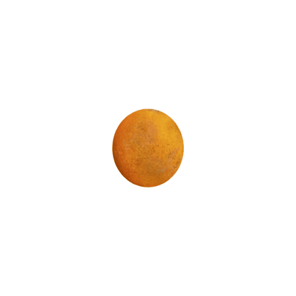
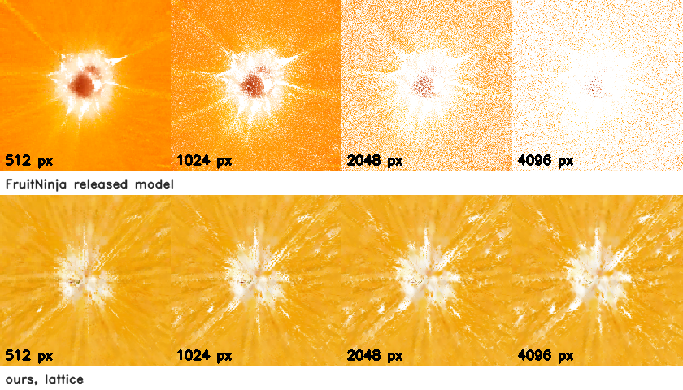
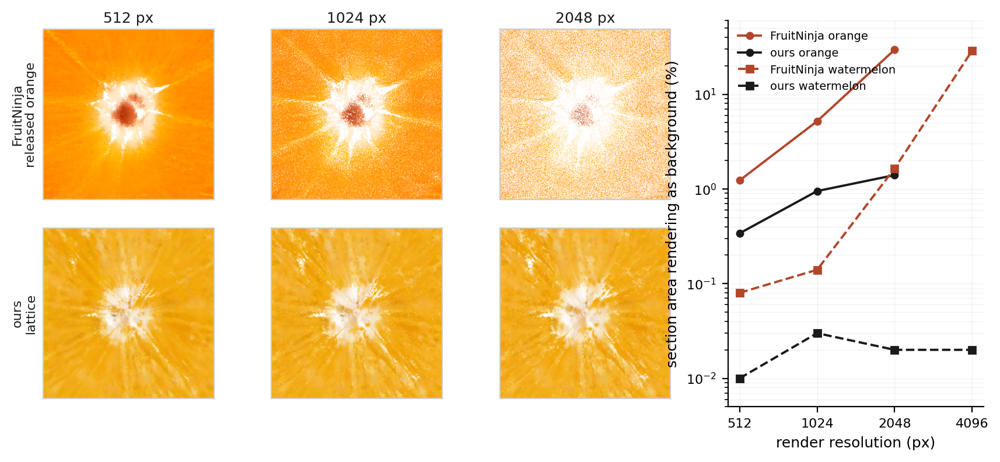
Cutting is an event with an answer
A plane arrives while the simulation runs. Two neighbouring cells stay connected iff they fall on
the same side of it — one O(1) test per cell. Connected-component labelling then reports
how many pieces exist: exactly, with no threshold to choose. One MPM solver is built per piece with
state carried over.
The cut deletes the edges it crosses, leaving the graph \(G=(\mathcal{V},\mathcal{E})\) on the same occupied cells:
Both tests are \(O(1)\) per cell, the first because \(\mathcal{A}\) was built once with the lattice. The pieces are the components of \(G\), and the piece count \(K\) is read off rather than chosen:
The rendered primitives follow their own piece, blended over the \(\mathcal{K}(g)\) nearest cells within that piece, so a cut severs the skinning as well as the physics. \(Q_m\) is the best-fit rotation of piece \(m\) from its rest cells to their current ones and \(d_g\) the primitive's rest offset, without which a piece loses its surface detail as it tumbles:
Contact uses the same occupancy. A particle of one piece is inside another exactly when it lands in an occupied cell of it, which is a lookup, and the way out is the vector to the nearest free cell — one distance transform of the free space answers it for every particle at once. The pieces then separate along the mean of those directions by the depth of the deepest, as a rigid translation, so that resolving contact cannot deform a slice.
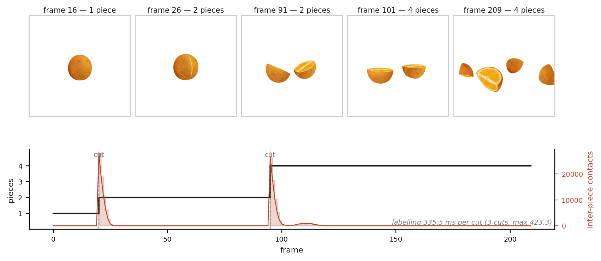
The appearance is independent of the render resolution
Every primitive in the released models stores scale = −16, so exp(−16) =
1.1×10⁻⁷: they are points, and what gives them a footprint is the rasteriser's screen-space
low-pass — a fixed number of pixels, not a fixed size in the world. At 512 that footprint happens to
match the primitive spacing. Above it, the spacing grows with the frame and the footprint does not. A
lattice cell is sized to its own spacing, so a transverse section that is solid at 512 pixels is solid
at 4096.
| Object | Method | 512 | 1024 | 2048 | 4096 |
|---|---|---|---|---|---|
| Orange | FruitNinja | 1.23% | 5.19% | 29.58% | 72.69% |
| Ours | 0.03% | 0.09% | 0.19% | 0.23% | |
| Watermelon | FruitNinja | 0.08% | 0.14% | 1.65% | 28.95% |
| Ours | 0.01% | 0.03% | 0.02% | 0.02% |
Fraction of a transverse section's own area that renders as background. How far a released model survives depends on how densely it was filled — the orange fails at 2048, the watermelon, filled about twice as densely for its size, at 4096.
Interior textures
Each object is cut all the way through along one fixed direction, the slices are drawn apart along the cut normal, and the camera moves. Every section is then on screen at the same time, which is a stricter test than showing one plane at a time: a section that disagrees with its neighbours has nothing to hide behind, and the camera angle means each face is seen obliquely as well as broadside — a texture painted onto the supervised planes would give itself away in both. Two viewing angles per object.
Interior fidelity
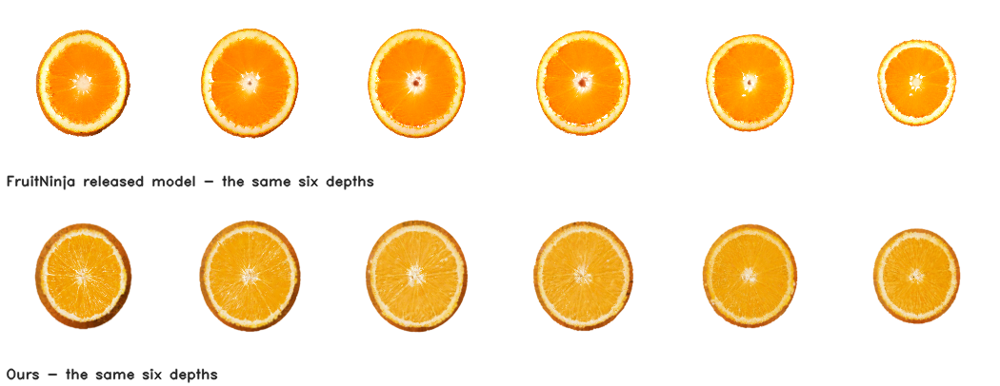
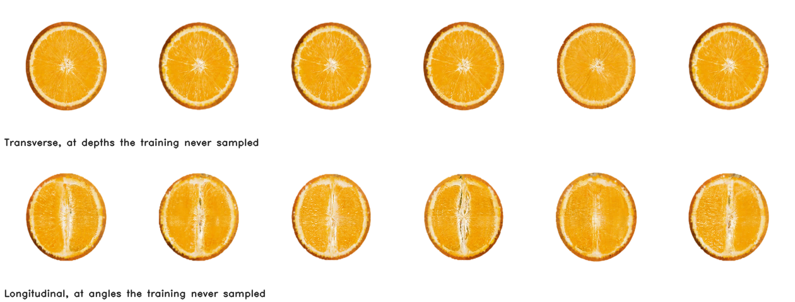
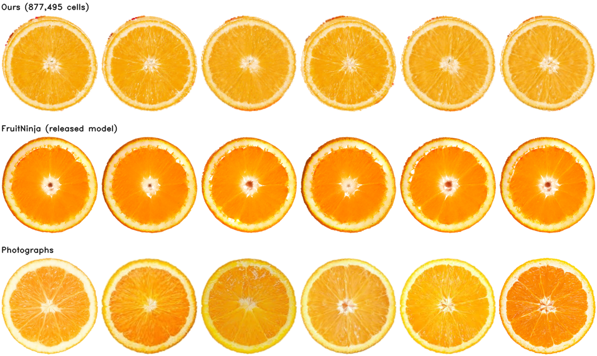
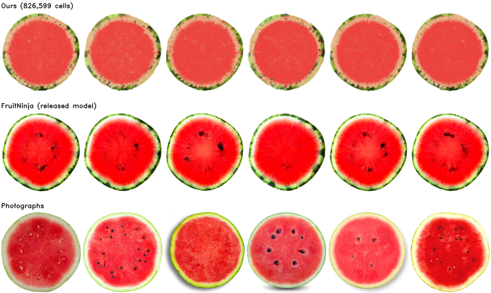
| Object | Method | FID h ↓ | KID h ↓ | FID v ↓ | KID v ↓ | Cos ↑ |
|---|---|---|---|---|---|---|
| Orange | FruitNinja | 95.5±2.0 | 145.9±3.0 | 234.2±22.6 | 316.4±42.5 | 0.966 |
| Ours | 79.8 | 117.8 | 178.4 | 213.7 | 0.976 | |
| Watermelon | FruitNinja | 180.5±2.7 | 218.5±12.7 | 244.6±14.9 | 291.1±31.8 | 0.944 |
| Ours | 275.4±5.8 | 378.1±12.2 | 235.1±5.0 | 304.6±14.0 | 0.955 |
Mean ± standard deviation over five independent draws of the cut planes. KID ×10⁻³.
On the orange the lattice leads on both orientations — transverse FID 79.8 against 95.5, longitudinal 178.4 against 234.2 — and on cross-view consistency. The released models' figures are means over five independent draws of the cutting planes with their spread beside them; the orange lattice figures are a single draw, and a draw moves FID by ±2 to ±23, which the transverse margin does not clear on its own.
Colour and the composition of the difference
| Transverse section | L* | a* | b* | saturation | |
|---|---|---|---|---|---|
| Orange | Photographs | 79.0 | 13.4 | 63.4 | 0.750 |
| FruitNinja | 76.0 | 23.4 | 65.9 | 0.828 | |
| Ours | 77.4 | 12.1 | 63.0 | 0.751 | |
| Watermelon | Photographs | 64.3 | 41.7 | 37.0 | 0.611 |
| FruitNinja | 58.5 | 51.2 | 51.3 | 0.800 | |
| Ours | 59.6 | 40.7 | 37.0 | 0.633 |
In colour the lattice matches the photographs closely — a* 13.9 against 13.4, saturation 0.758 against 0.750 — while the released models run red and oversaturated, at nearly twice the photographs' redness on the orange. The spectra separate the two in a different way. At the structural scale the lattice carries the most energy of the three (f/4: 0.0155 against the photographs' 0.0117 and the released model's 0.0137), and at the finest scale measured it is the closest of the two to the photographs (f/16: 0.00109 against 0.00142, where the released model overshoots to 0.00203). So the two place their detail at different scales: the lattice's sits where the segments and membranes are, and the released model's runs finer than the photographs do. This is a property of the supervision as much as of either representation — a per-pixel loss against a photograph of a different specimen compares fibres that can never be brought into register, and what a model does with that residual is visible in its spectrum.
Run-time cost
The primitive count is storage; this is what it buys when the object is rendered. At 2048 pixels the lattice renders four times faster in a third of the memory, and its cost is roughly flat in resolution where the released model's grows — a sub-pixel primitive is touched by more tiles as the frame grows, while a cell covers the same world extent whatever the frame is.
| Orange, one view, RTX 3090 | 512 | 1024 | 2048 | Peak VRAM | |
|---|---|---|---|---|---|
| FruitNinja | 3,928,330 prims | 5.8 ms | 11.0 ms | 17.3 ms | 2,174 MB |
| Ours | 898,563 cells | 2.9 ms | 1.9 ms | 4.3 ms | 819 MB |
| 171 → 341 fps | 91 → 527 fps | 58 → 231 fps | 2.7× less |
Material, decomposed without being told
A fruit is not one material, and a filled point cloud carries a colour per primitive and no statement about what any of them is. On the lattice, the level says shell from interior and the decoded appearance says what kind of interior. Clustering those, with classes merged when their appearance centroids agree so K is not chosen by hand, separates an orange into peel, flesh, a transition and pith — nothing is told that an orange has a pith.
Each class is placed on a stiffness scale by the two things the representation has to offer — how much of the class is shell (\(\beta_j\)) and how bright it is (\(L_j\)), each ranked across classes so neither can dominate by units — and the scale is mapped to Young's modulus:
That the material is in the feature and not just in our clustering is a separate claim, so it is tested separately: a probe fitted on the frozen features to predict \(r_i\), scored on a held-out split, against the same fit on a shuffled target.
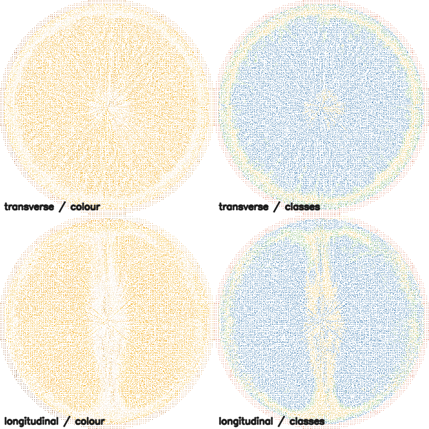
| Probe on the frozen 8-d appearance feature | MAE ↓ | R² ↑ | 4-class accuracy ↑ | |
|---|---|---|---|---|
| Linear | 0.2235 | 0.234 | 37.0% | |
| 2-layer | 0.1359 | 0.695 | 62.9% | |
| 3-layer | 0.0390 | 0.934 | 93.0% | |
| Control — shuffled target | 0.2778 | −0.009 | 12.8% |
So the appearance latent already carries the material distinction, and not linearly. The relative field it predicts is dimensionless in [0,1]; the absolute scale comes from an order-of-magnitude range keyed by category, because appearance cannot supply a modulus and pretending otherwise would be false precision. Fed to MPM per particle, a drop that compresses a uniform object by 4.2% compresses the lattice-derived one by 0.1%.
Arbitrary topology
The published dataset — watermelon, apple, orange, red velvet cake, loaf bread, pomegranate — is entirely genus zero and every released model is star-shaped about its centroid. We train a doughnut.
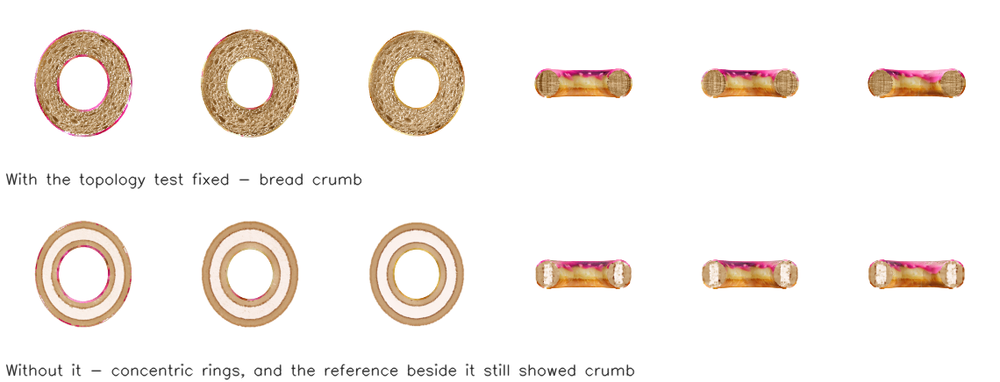
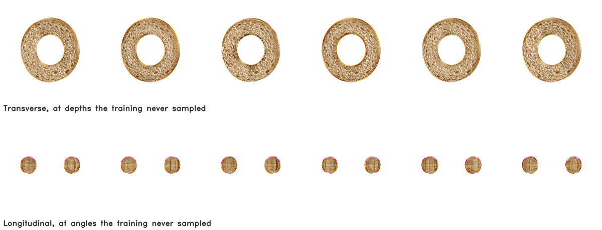
This is also a caution about the reference-free metrics, and one worth recording: between the two runs CLIP scores 28.6 and 28.1, and cross-view consistency prefers the version with rings, 0.892 against 0.861, because a surface of revolution is more self-similar across views than crumb is. Neither metric sees the difference that the image makes obvious.
Cost
| Object | Method | Primitives | Parameters | On disk |
|---|---|---|---|---|
| Orange | FruitNinja | 3,928,330 | 55.0M | 267 MB |
| Ours | 898,563 | 7.2M | 61 MB | |
| Watermelon | FruitNinja | 7,959,789 | 111.4M | 541 MB |
| Ours | 806,506 | 6.5M | 132 MB |
A free primitive stores 14 floats. A lattice cell stores an 8-dimensional feature with position implicit in the grid index, plus one shared 35k-parameter decoder.
Conclusion
Putting the whole object on a voxel lattice preserves FruitNinja's supervision and its visual result while making the object something a system can query. The piece count after a cut becomes a labelling rather than a threshold choice, one MPM solver per piece follows directly and the pieces collide; material becomes a property the same feature decodes, decomposed without supervision; the appearance stops depending on the resolution it is rendered at; and neither the lattice nor the supervision assumes the object is star-shaped.
Limitations. Transverse sections score below the released models on both objects, and the surplus is not missing detail — in every band measured we carry more fine-scale energy than the photographs do — but grain, the residual of a per-pixel loss against a photograph of a different specimen whose structure can never be brought into register with ours. The lattice fixes its resolution in advance, so detail finer than a cell cannot appear anywhere; matching the released models' uniform-equivalent spacing would cost 4.3× the cells, which is their primitive count. The material field changes the simulated dynamics but does not yet produce a hard shell around a soft interior, because MPM transfers through one background grid and our shell is one to three cells thick. And the quantitative comparison rests on six reference photographs per orientation, which is what the dataset provides and is too few for these metrics to separate close results confidently.
References
- B. Kerbl, G. Kopanas, T. Leimkühler, G. Drettakis. 3D Gaussian Splatting for Real-Time Radiance Field Rendering. ACM TOG 42(4), 2023. arXiv
- B. Mildenhall, P. P. Srinivasan, M. Tancik, J. T. Barron, R. Ramamoorthi, R. Ng. NeRF: Representing Scenes as Neural Radiance Fields for View Synthesis. ECCV, 2020. arXiv
- F. Wu, Y. Chen. FruitNinja: 3D Object Interior Texture Generation with Gaussian Splatting. CVPR, 2025. arXiv
- T. Xie, Z. Zong, Y. Qiu, X. Li, Y. Feng, Y. Yang, C. Jiang. PhysGaussian: Physics-Integrated 3D Gaussians for Generative Dynamics. CVPR, 2024. arXiv
- B. Huang, Y. Chen, R. Lu, G. Zeng, H. Zha, Y. Pei, S. Huang. GaussianFluent: Gaussian Simulation for Dynamic Scenes with Mixed Materials. arXiv:2601.09265, 2026. arXiv
- Z. Liu, H. Ouyang, Q. Wang, K. L. Cheng, J. Xiao, K. Zhu, N. Xue, Y. Liu, Y. Shen, Y. Cao. InFusion: Inpainting 3D Gaussians via Learning Depth Completion from Diffusion Prior. arXiv:2404.11613, 2024. arXiv
- S. Liang, Y. Xiao, W. Tang. InnerGS: Internal Scenes Reconstruction and Segmentation via Factorized 3D Gaussian Splatting. arXiv:2508.13287, 2025. arXiv
- J. Kopf, C.-W. Fu, D. Cohen-Or, O. Deussen, D. Lischinski, T.-T. Wong. Solid Texture Synthesis from 2D Exemplars. ACM TOG 26(3), 2007. arXiv
- R. Rombach, A. Blattmann, D. Lorenz, P. Esser, B. Ommer. High-Resolution Image Synthesis with Latent Diffusion Models. CVPR, 2022. arXiv
- B. Poole, A. Jain, J. T. Barron, B. Mildenhall. DreamFusion: Text-to-3D using 2D Diffusion. ICLR, 2023. arXiv
- N. Ruiz, Y. Li, V. Jampani, Y. Pritch, M. Rubinstein, K. Aberman. DreamBooth: Fine Tuning Text-to-Image Diffusion Models for Subject-Driven Generation. CVPR, 2023. arXiv
- O. Avrahami, O. Fried, D. Lischinski. Blended Latent Diffusion. ACM TOG 42(4), 2023. arXiv
- E. Richardson, G. Metzer, Y. Alaluf, R. Giryes, D. Cohen-Or. TEXTure: Text-Guided Texturing of 3D Shapes. SIGGRAPH, 2023. arXiv
- T. Lu, M. Yu, L. Xu, Y. Xiangli, L. Wang, D. Lin, B. Dai. Scaffold-GS: Structured 3D Gaussians for View-Adaptive Rendering. CVPR, 2024. arXiv
- B. Zhang, Y. Cheng, J. Yang, C. Wang, F. Zhao, Y. Tang, D. Chen, B. Guo. GaussianCube: A Structured and Explicit Radiance Representation for 3D Generative Modeling. NeurIPS, 2024. arXiv
- VolSplat: Rethinking Feed-Forward 3D Gaussian Splatting with Voxel-Aligned Prediction. arXiv:2509.19297, 2025. arXiv
- K. Ren, L. Jiang, T. Lu, M. Yu, L. Xu, Z. Ni, B. Dai. Octree-GS: Towards Consistent Real-time Rendering with LOD-Structured 3D Gaussians. IEEE TPAMI, 2025. arXiv
- C. Jiang, C. Schroeder, J. Teran, A. Stomakhin, A. Selle. The Material Point Method for Simulating Continuum Materials. SIGGRAPH Courses, 2016. arXiv
- A. Stomakhin, C. Schroeder, L. Chai, J. Teran, A. Selle. A Material Point Method for Snow Simulation. ACM TOG 32(4), 2013. arXiv
- X. Wang, H. Wu, W. Song, K. Xu. Fracture-GS: Dynamic Fracture Simulation with Physics-Integrated Gaussian Splatting. ICLR, 2026.
- Y. Jiang, C. Yu, T. Xie, X. Li, Y. Feng, H. Wang, M. Li, H. Lau, F. Gao, Y. Yang, C. Jiang. VR-GS: A Physical Dynamics-Aware Interactive Gaussian Splatting System in Virtual Reality. SIGGRAPH, 2024. arXiv
- U. Jain, A. Mirzaei, I. Gilitschenski. GaussianCut: Interactive Segmentation via Graph Cut for 3D Gaussian Splatting. NeurIPS, 2024. arXiv
- DecoupledGaussian: Object-Scene Decoupling for Physics-Based Interaction. CVPR, 2025. arXiv
- X. Liu, S. Wu, K. Han. Scene-Level Heterogeneous Physics Simulation with 3D Gaussian Splats. arXiv:2606.21753, 2026. arXiv
- A. Prasoon, K. Petersen, C. Igel, F. Lauze, E. Dam, M. Nielsen. Deep Feature Learning for Knee Cartilage Segmentation Using a Triplanar CNN. MICCAI, 2013.
- M. Perslev, E. B. Dam, A. Pai, C. Igel. One Network to Segment Them All: A General, Lightweight System for Accurate 3D Medical Image Segmentation. MICCAI, 2019. arXiv
- Y. Zhang, Q. Liao, L. Ding, J. Zhang. Bridging 2D and 3D Segmentation Networks for Computation-Efficient Volumetric Medical Image Segmentation. CMIG, 2022. arXiv
- F. Isensee, P. F. Jaeger, S. A. A. Kohl, J. Petersen, K. H. Maier-Hein. nnU-Net: A Self-Configuring Method for Deep Learning-Based Biomedical Image Segmentation. Nature Methods 18(2), 2021.
- H. Cai, S. Li, L. Qi, Q. Yu, Y. Shi, Y. Gao. Orthogonal Annotation Benefits Barely-supervised Medical Image Segmentation. CVPR, 2023. arXiv
- Q. Shen, X. Yang, X. Wang. FlashSplat: 2D to 3D Gaussian Splatting Segmentation Solved Optimally. ECCV, 2024. arXiv
- S. Zhi, T. Laidlow, S. Leutenegger, A. J. Davison. In-Place Scene Labelling and Understanding with Implicit Scene Representation. ICCV, 2021. arXiv
- M. Ye, M. Danelljan, F. Yu, L. Ke. Gaussian Grouping: Segment and Edit Anything in 3D Scenes. ECCV, 2024. arXiv
- J. Cen, J. Fang, C. Yang, L. Xie, X. Zhang, W. Shen, Q. Tian. Segment Any 3D Gaussians. AAAI, 2025. arXiv
- S. Zhou, H. Chang, S. Jiang, Z. Fan, Z. Zhu, D. Xu, P. Chari, S. You, Z. Wang, A. Kadambi. Feature 3DGS: Supercharging 3D Gaussian Splatting to Enable Distilled Feature Fields. CVPR, 2024.
- Y. Siddiqui, L. Porzi, S. R. Bulò, N. Müller, M. Nießner, A. Dai, P. Kontschieder. Panoptic Lifting for 3D Scene Understanding with Neural Fields. CVPR, 2023.
- C. M. Kim, M. Wu, J. Kerr, M. Tancik, K. Goldberg, A. Kanazawa. GARField: Group Anything with Radiance Fields. CVPR, 2024. arXiv
- M. Liu, M. A. Uy, D. Xiang, H. Su, S. Fidler, N. Sharp, J. Gao. PartField: Learning 3D Feature Fields for Part Segmentation and Beyond. ICCV, 2025. arXiv
- H. Kervadec, J. Dolz, M. Tang, E. Granger, Y. Boykov, I. Ben Ayed. Constrained-CNN Losses for Weakly Supervised Segmentation. Medical Image Analysis 54, 2019. arXiv
- E. Heitz, K. Vanhoey, T. Chambon, L. Belcour. A Sliced Wasserstein Loss for Neural Texture Synthesis. CVPR, 2021. arXiv
- Y. Boykov, O. Veksler, R. Zabih. Fast Approximate Energy Minimization via Graph Cuts. IEEE TPAMI 23(11), 2001.
- P. Krähenbühl, V. Koltun. Efficient Inference in Fully Connected CRFs with Gaussian Edge Potentials. NeurIPS, 2011.
- J. Hessel, A. Holtzman, M. Forbes, R. Le Bras, Y. Choi. CLIPScore: A Reference-free Evaluation Metric for Image Captioning. EMNLP, 2021. arXiv
- M. Heusel, H. Ramsauer, T. Unterthiner, B. Nessler, S. Hochreiter. GANs Trained by a Two Time-Scale Update Rule Converge to a Local Nash Equilibrium. NeurIPS, 2017. arXiv
- M. Bińkowski, D. J. Sutherland, M. Arbel, A. Gretton. Demystifying MMD GANs. ICLR, 2018. arXiv
BibTex
@misc{anonymous2026lattice,
title = {Voxel-Lattice Gaussians: Cutting, Collision and Material
from One Representation},
author = {Anonymous},
year = {2026},
howpublished = {Preprint},
}